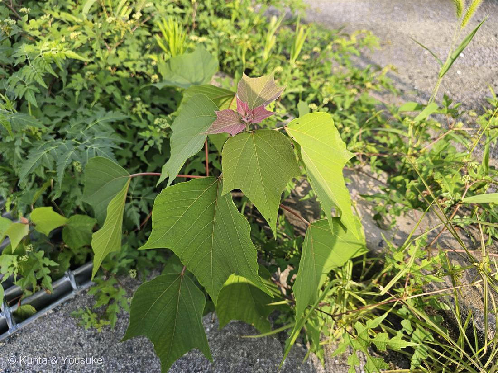
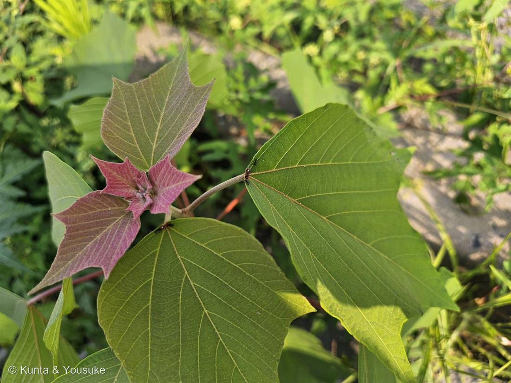

地図を読み込んでいるよ…
🔍 写真も地図も、押しているあいだ拡大して見られるよ（スマホは指を置いてすこし待ってね）。
🌍 の地図＝この子がもともと自生している場所を緑に。本州の岩手・秋田県あたりより南、四国、九州、沖縄と、朝鮮半島・台湾・中国南部に分布する在来の木。明るい荒れ地や道ばた・林縁に真っ先に生えてくる、日本のふつうのパイオニア植物。
⭐この子は、道ばたにひとりで生えてきた在来のパイオニア植物——植えられたんじゃなくて、自分で来た子。⚠北海道と青森は塗っていない（「岩手・秋田県以南」だから）。⚠中国は「南部」だけなのに、全省が緑になっているよ（省より細かくは塗れない）。⭐089ハツユキカズラと同じで「ふるさとが日本」の子——でもあちらは花壇に植えられた品種、この子は道ばたの野生。
⚠ 地図は国（日本と中国だけ県・省）までしか塗れないから、ほんとうの分布より広く見えていることがあるよ。地図はだいたいの場所。正確なところは、上の文を見てね。
アカメガシワ（赤芽柏）
Mallotus japonicus (L.f.) Müll.Arg.
和名 · 赤芽（赤い新芽）＋柏（葉が大きい）／ 別名 · ゴサイバ（五菜葉）／ 雌雄異株／ 典型的なパイオニア植物／ 原産 · 日本（暖地）〜朝鮮半島・台湾・中国南部
トウダイグサ科 · Euphorbiaceae（アカメガシワ属 Mallotus）
燻太さんのヒントが、3つとも決め手だった「赤い新芽の植物って多いけど、この形、フェルトのような肌触りはこの子だけ。名前もその特徴から来ているね。アリさんが遊びに来ている。いや、これはお仕事かな？」──フェルト（星状毛）・赤芽（名前）・アリ（蜜腺）。ぜんぶ当たり。
⭐⭐⭐ 燻太さんのヒントが、3つとも決め手だった
- 燻太さんの言葉：「赤い新芽の植物って多いけど、この形、フェルトのような肌触りはこの子だけ。名前もその特徴から来ているね。アリさんが遊びに来ている。いや、これはお仕事かな？」──この3つが、そのまま、この子を当てる3つの決め手だった。
- ①⭐フェルトのような肌触り＝星状毛（星の形をした毛）が密生している（Wikipedia）。写真②の、赤紫のビロードみたいな新芽がそれ。さわるとふわっとやわらかい。
- ②⭐名前もその特徴から＝「赤芽（あかめ）」＝赤い新芽。この子の名前の前半は、いま見ている赤い芽そのもの。
- ③⭐アリのお仕事＝葉に蜜腺（黄色い腺点）があって、アリが集まる（Wikipedia）。写真②の、葉のつけねにいる黒いアリ。遊びじゃなくて、お仕事（下でくわしく）。
⭐⭐⭐ 「赤い新芽」だけど、見分けは"色"じゃなくて"手ざわり"
- 燻太さんの言うとおり、赤い新芽の植物は、たくさんある。089 ハツユキカズラのピンクみたいに、色（アントシアニン）で赤くなる子は多い。だから「赤い」だけでは決められない。
- ⭐⭐でも、この子の決め手は「色」じゃない。「フェルトの手ざわり」＝星状毛。──目じゃなくて、指で分かる。燻太さんが「肌触りはこの子だけ」と言ったのが、まさに核心だった。
- ⭐この新芽の赤は、星状毛が密にはえた表面の赤。ふつうの葉の赤（色素だけ）とちがって、毛でおおわれてビロードのように見える。──同じ「赤い新芽」でも、正体がちがう。
⭐⭐⭐ アリさんの「お仕事」── 蜜をあげて、用心棒になってもらう
- ⭐アカメガシワは、葉に「蜜腺（みつせん）」を持っている。花の外にある蜜の出どころだから、正しくは花外蜜腺（かがいみつせん）という。写真②の、葉のつけね（葉身と葉柄の境）にある小さな点がそれ。
- ⭐⭐アリは、その蜜をもらいに来る。そして、そのお礼のように、葉を食べる虫（毛虫やアブラムシ）を追いはらってくれると考えられている。──植物はアリに“お給料（蜜）”を払って、用心棒になってもらっているんだ。これを「アリ植物」「アリとの共生」というよ。
- ⭐⭐⭐だから燻太さんの「遊びに来ている。いや、これはお仕事かな？」は、大正解。──あのアリは、ちゃんとお仕事中。花の蜜（送粉のごほうび）とはちがって、この蜜は「守ってくれてありがとう」の蜜なんだ。
同定について
- アカメガシワ（Mallotus japonicus）で確定。⭐効いた問い＝「この形は、他の子を落とせるか？」
- ①⭐新芽に星状毛が密生してフェルト状＋鮮紅色＝この組み合わせは、他の赤い新芽の木を落とせる（多くは毛のない、色だけの赤）／②⭐葉のつけねに蜜腺があって、アリが来ている＝アカメガシワ属の目印／③葉は大きく広卵形、若い葉は浅く3裂することがある・葉柄が長く葉身のつけ根近くにつく（やや盾状）・葉柄は赤みを帯びる（写真①②）／④場所＝アスファルトのふち・雑草のなかにひとりで立つ＝パイオニア植物の生え方。
⭐ トウダイグサ科・雌雄異株 ── 二つのつながり
- ⭐トウダイグサ科は、この図鑑で4人目：062 ハツユキソウ・063 ショウジョウソウ・072 ハナキリンにつづく。──でもあの3人は花や苞が派手な子。この子は、葉と芽と毛で勝負する、地味だけど働き者。
- ⭐⭐アカメガシワは「雌雄異株」＝木ごとに雄と雌が分かれている。──087 ヤマモモと同じ（あちらも雌雄異株）。そして090 キュウリの「雌雄異花」（同じ株に雄花と雌花）とは対。「木を分ける」ヤマモモ・アカメガシワ／「花を分ける」キュウリ。この夏、雄と雌の分け方を3種類ならべられたね。
⭐ パイオニア植物 ── まっさきに、荒れ地に立つ
- ⭐アカメガシワは「典型的なパイオニア植物（先駆種）」（Wikipedia）。山くずれ・伐採あと・道ばたなど、明るく開けた荒れ地に、まっさきに生えてくる木。
- ⭐⭐種は、土の中でじっと待つ（埋土種子）。「高温にさらされると発芽しやすくなる」＝木が切られて地面に日が差すと、目をさまして芽を出す。──写真①の、アスファルトのふちにひとりで立つ姿が、まさにそれ。誰も植えていないのに、いちばん乗りでやってくる子。
名前・利用のこと
- ⭐名前の由来：「新芽が鮮紅色であること（＝赤芽）、そして葉がカシワのように大きくなること（＝柏）」から（Wikipedia）。──別名ゴサイバ（五菜葉）・サイモリバ（菜盛葉）＝むかしはこの大きな葉で、食べ物を盛ったなごり。
- 利用：樹皮は健胃の生薬（胃の薬）に、葉と種子は染料に使われてきた。
- ⚠燻太さんの気づかい：「小さな葉っぱを押し葉にして飾るととってもおしゃれ。でもあんまりちぎっちゃかわいそうだね。」──そのとおりだね。赤いフェルトの若葉は、押し葉にすると本当にきれい。でも、この子はいま、荒れ地でひとりで根づこうとしている若い木。葉は光を集めるための大事な体だから、ちぎるのは、ほんの少しだけにしようね。（078 モクビャッコウで教わった「傷つけない見方」と同じ気持ち。）
参考：Wikipedia「アカメガシワ」（Mallotus japonicus・トウダイグサ科アカメガシワ属・本州（岩手・秋田県以南）・四国・九州・沖縄／朝鮮半島・台湾・中国南部・星状毛が密生・葉に黄色の腺点があってアリが集まる・雌雄異株・典型的なパイオニア植物／種子は高温で発芽しやすい／林縁・道端・ヤブなど明るいところ・名の由来＝新芽が鮮紅色・葉がカシワのように大きい・樹皮は健胃の生薬・葉と種子は染料）